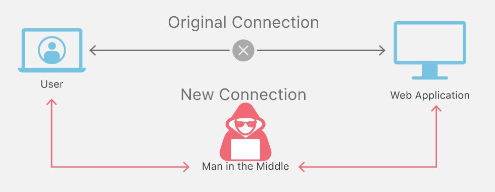

When discussing the topic of cyber security, one of the most crucial components is the network. Though in the past we have looked at what malware is and what it can do, this week we focus on one of the gateways that can allow/prevent malware: network security. This type of security is becoming increasingly important as more and more sensitive data is being added to the internet. With a vast amount of private data passing through various channels, it is critical that the right people have access to it.
Before we dive into network security, lets discuss what a general “network” is and its components. A computer network is essentially a group of computer systems that are linked together via a communication channel. This allows all the computers on the network to share files and resources among each other. There are various types of networks, the common ones including: Local Area Networks (LAN), Personal Area Networks (PAN), and Wide Area Networks (WAN). As their respective names mention, they are all designed to facilitate communication with other computer systems that they are connected with. The Open Systems Interconnection, or OSI model, characterizes the communication functions of a general network. There are 7 main layers:
There are several methods of providing network security so that all users can share data safely. Common methods and related strategies include:
Now, lets focus on some specific network based attacks. One of the most common ones is the Man in the Middle attack, or MITM. This attack is where an attacker secretly and maliciously alters a communication between two parties who believe they are communicating with each other.
Another type of attack is Denial of Service, or DoS. This attack is meant to shut down a network or machine by making it inaccessible to its users. Examples include buffer overflows, ICMP floods, and SYN floods. An additional type of DoS attack is the Distributed Denial of Service attack, or DDoS. This attack is attempted to disrupt normal traffic by overwhelming a network with a flood of internet traffic.
Jon Postel, and early American computer scientist, came up with a design guideline for software know as the “Robustness Principle”. This states that programmers should “assume that the network is filled with malevolent entities that will send in packets designed to have the worst possible effect.” In other words, software should be written to deal with any kind of error that may pop-up in the future. This assumption ultimately leads to a more thought-out design in all levels of software. To summarize in Postel’s own words, “be conservative in what you do, be liberal in what you accept from others.”